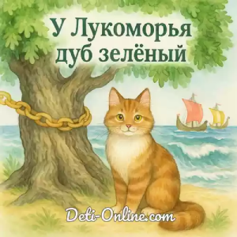

У лукоморья дуб зелёный; Златая цепь на дубе том: И днём и ночью кот учёный Всё ходит по цепи кругом; Идёт направо — песнь заводит, Налево — сказку говорит. Там чудеса: там леший бродит, Русалка на ветвях сидит; Там на неведомых дорожках Следы невиданных зверей; Избушка там на курьих ножках Стоит без окон, без дверей; Там лес и дол видений полны; Там о заре прихлынут волны На брег песчаный и пустой, И тридцать витязей прекрасных Чредой из вод выходят ясных, И с ними дядька их морской;
Там королевич мимоходом Пленяет грозного царя; Там в облаках перед народом Через леса, через моря Колдун несёт богатыря; В темнице там царевна тужит, А бурый волк ей верно служит; Там ступа с Бабою Ягой Идёт, бредёт сама собой, Там царь Кащей над златом чахнет; Там русский дух... там Русью пахнет! И там я был, и мёд я пил; У моря видел дуб зелёный; Под ним сидел, и кот учёный Свои мне сказки говорил.